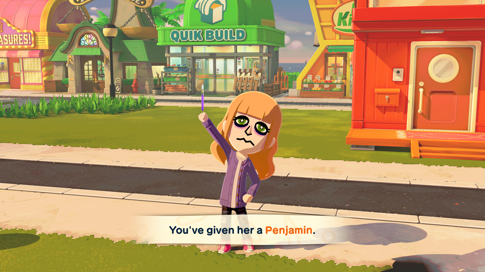

ImperfectChaos' very own slice of Web |
 |
|---|
FUCK YOU OBS
(25/04/26)
My absolute hatred for Open Broadcast Software right now cannot be understated. I poured hours into setting it up perfectly. I wrote an autostart script to launch it setup exactly how I wanted for game clips everytime I turned on my computer. I had it create a virtual audio cable for all my game audio and only game audio DO YOU UNDERSTAND HOW LONG THAT TOOK TO FIGURE OUT. All for this PIECE OF SHIT to break on me completely, not just the script the entire program just won't take any audio input in any form no Desktop audio no Microphone and especially no virtual audio cable. I literally have no idea what to do in this situation no amount of reinstalling or downgrading or readding sources does anything WHEN I'M FINALLY READY TO MAKE CONTENT AGAIN. THE ARTIST FOR MY VTUBER FINALLY STARTED SKETCHING FOR ME THIS WEEK. FUCK YOU OBS.
In other less frustrating news because yes that's all I had to say but its been pissing me off enough to name the entire Blog Entry after it, you may have noticed a little improvement to readability on some pages! It's not a lot right now but I'm working hard to improve it further but one step at a time, more improvements will slowly roll out as I figure out what changes to make (and more importantly how to implement them). I've also been chiping away at the RetroAchievements Wii launch event still, I've gotten my hands on the Silver badge for 25 event points which also marks half way to Grandmaster but that also means the well of easy games has been drying up. M&M's Kart Racing Time Trials eat your heart out.
Last little update is I've started playing a little bit of the new Tomodachi Life. It's been quite a lot of fun but I've been running into the same problem I had with the 3DS game (or any UGC reliant game) in which I either don't know who/what to add or don't like the quality of the Miis I make so in about 7 hours of game open time I only have 6 Miis on my island. I really like my new Mii though! I was using just makeup for the eyebags at first but I saw a Tomoko Kuroki Mii do it using the cheek blush which I copied but neglected to realise that means I lose the freckles my Mii had since they occupy the same facial features slot, so I'm debating if I should go baack to just makeup eyebags or if I should use makeup for the freckles. A photo of it and it's hyper-realistic pen will be sitting at the bottom of this page, but otherwise peace out and until next time I hope to fuck I can fix OBS some time soon..

Welcome to my little part of the Internet <3
.jpg)
Stay as long as you'd like.
There's plenty of room.
W.I.P.
This document was last modified: